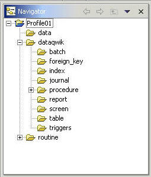

Fidelity Profile projects typically use a pre-defined file structure. This file structure is derived from the Fidelity Profile Installation toolset. The New Profile Project wizard automatically generates the recommended structure. The benefit of using the pre-defined structure is consistency and compatibility with Fidelity Profile Service and Fix packs, as well as SCM repositories.

All Profile resources have unique file extensions that identify their resource type. The file extensions are used by the editors and interface programs to apply resource specific processing logic. For example, files with a .PROC file extension are recognized as PSL Procedures by the PSL Editor.
The following table defines Fidelity Profile resource types along with their respective recommended folders. The folders are prefixed with the project root directory. Routines can be stored in more than one location. Most routines are stored in the routines sub-directory, however percent routines (M routines prefixed with a percent sign) are stored in operating specific sub-directories of percent_routine.
| Resource | File Extension | Recommended folder |
| Aggregate | AGR | %project_root\dataqwik\aggregate\ |
| Batch | BATCH | %project_root\dataqwik\batch\ |
| Column | COL | %project_root\dataqwik\table\%table\ |
| Data | G | %project_root\data\ |
| Executive | EXE | %project_root\dataqwik\executive\ |
| Foreign Key | FKY | %project_root\dataqwik\foreign_key\ |
| Index | IDX | %project_root\dataqwik\index\ |
| Journal | JFD | %project_root\dataqwik\journal\ |
| Look Up Doc | LUD | %project_root\dataqwik\lookup_docregate\ |
| Pre Post Lib | PPL | %project_root\dataqwik\pre_post_lib\ |
| Procedure | PROC | %project_root\dataqwik\procedure\ |
| Query | QRY | %project_root\dataqwik\query\ |
| Record Map | RMP | %project_root\dataqwik\record_map\ |
| Report | RPT | %project_root\dataqwik\report\ |
| Screen | SCR | %project_root\dataqwik\screen\ |
| Trigger | TRIG | %project_root\dataqwik\trigger\ |
| M Routine | m | %project_root\routine\ |
| Percent Routine | m | %project\percent_routine\%os\ |